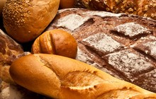

| Receitas Salgadas |
|
Pastel |
 Pão |
Crepe |
Ingredientes
• 20 discos de massa para pastel (cerca de 320 g)
• 1 xícara (chá) de músculo cozido e desfiado (cerca de 250 g cru)
• 1 cebola
• 2 colheres (sopa) de uva-passa preta
• 4 azeitonas verdes sem caroço
• 1 ovo cozido
• 1/2 xícara (chá) de caldo de carne caseiro (ou água)
• 1/2 colher (sopa) de azeite
• 1/2 colher (chá) de páprica doce
• 1/2 colher (chá) de cominho
• 1 pitada de páprica picante
• 2 talos de cebolinha
• 1 gema de ovo para pincelar
• sal a gosto
Modo de preparo
1. Preaqueça o forno a 180 ºC (temperatura média) e retire a massa de pastel da geladeira.
2. Descasque e fatie a cebola em meias-luas finas. Descasque e pique o ovo cozido em cubinhos.Fatie as azeitonas. Lave, seque e fatie a parte verde da cebolinha.
3. Leve ao fogo médio uma panela pequena. Quando aquecer, regue com o azeite e junte a cebola. Tempere com uma pitada de sal e refogue por cerca de 5 minutos, até ficar bem dourada. Acrescente o cominho e as pápricas doce e picante. Misture bem.
4. Adicione a carne desfiada, as azeitonas e as uvas-passas. Tempere com sal e regue com o caldo. Misture e deixe cozinhar por cerca de 1 minuto, sem deixar secar - o recheio deve ficar úmido. Desligue o fogo e misture o ovo e a cebolinha picados. Transfira para uma tigela.
5. Coloque cerca de 2 colheres (sopa) do recheio no centro de um disco de massa. Passe água em toda a borda da massa com o dedo - isso impede que os pastéis abram na hora de assar. Cubra com outro disco e pressione bem as bordas para fechar.
6. Torça e pressione a borda a cada 2 cm para fechar o pastel da mesma forma que uma empanada (se preferir, aperte com um garfo, mas com cuidado para não furar a massa). Transfira para uma assadeira grande, de preferência antiaderente, e repita o processo para formar os outros pastéis.
7. Numa tigelinha, misture a gema com 1 colher (sopa) de água e pincele sobre os pastéis. Leve ao forno e deixe assar por cerca de 20 minutos, até dourar. Retire do forno e sirva a seguir.